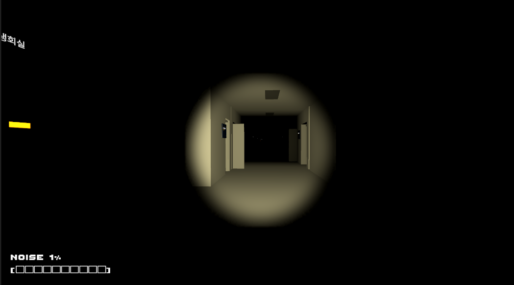
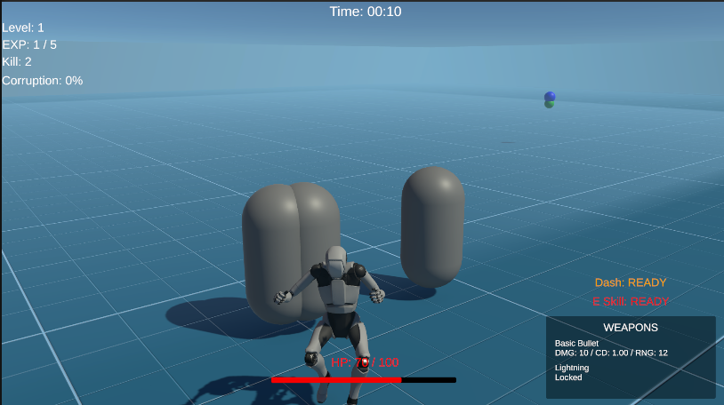

Team Project · Leader · PC · VR 확장 예정
Deadline
실제 대학교 건물 구조를 기반으로, 플레이어가 층별 퍼즐과 크리처 위협을 피해 5층에서 1층까지 탈출하는 1인칭 탈출형 공포게임입니다.
- 팀장으로서 보고서 작성, 크리처 기획, 콘텐츠 기획, 레벨 디자인 담당
- AI 도구를 활용해 크리처 로직, 플레이어 시스템, UI 시스템 구축
- 소리, 시야, 손전등 조건에 반응하는 공포 플레이 구조 구현
Unity Game Developer Portfolio
Unity와 C#을 기반으로 플레이어 조작, 크리처 AI, 인벤토리, UI, 스폰 시스템 등 게임 플레이에 필요한 핵심 시스템을 구현해왔습니다. AI 도구를 활용해 코드 초안을 만들고, 프로젝트 구조에 맞게 직접 적용·수정·통합·테스트하며 실제 작동하는 시스템으로 완성하는 경험을 쌓고 있습니다.
팀 프로젝트에서 팀장으로 보고서 작성, 기획, 레벨 디자인, 시스템 구현을 담당했습니다.
크리처 AI, 소리 반응, 손전등 판정, 인벤토리, 수위 상승 등 게임 로직 구현 경험이 있습니다.
기능 구현에서 끝내지 않고 버그 원인을 분석하고 구조를 개선하는 과정을 중요하게 생각합니다.
Unity
C#
Player Movement, Interaction, Puzzle, Survival System
NavMeshAgent, Creature AI, Sound Reaction, Monster Spawn
Canvas UI, Inventory UI, Quick Slot, HUD, Pop-up UI
AI-assisted Development, Debugging, Play Testing

Team Project · Leader · PC · VR 확장 예정
실제 대학교 건물 구조를 기반으로, 플레이어가 층별 퍼즐과 크리처 위협을 피해 5층에서 1층까지 탈출하는 1인칭 탈출형 공포게임입니다.

Personal Project · PC · Prototype
몬스터를 처치하고 경험치를 획득해 성장하며, 잠식률에 따라 위험도 함께 증가하는 3인칭 생존 액션 로그라이트 게임입니다.

Team Project · Leader · PC
시간이 지날수록 물에 잠기는 섬에서 자원을 수집하고, 인벤토리와 수위 상승 시스템을 활용해 제한 시간 안에 탈출하는 타임어택 생존 탈출 게임입니다.
Education
2021.03 ~ 재학 중
Unity 기반 게임 기획 및 클라이언트 개발 프로젝트 수행
Award
수상작: Deadline
1인칭 탈출형 공포게임 기획 및 크리처 AI, UI, 콘텐츠 로직 구현
크리처 행동을 순찰, 반응, 추적, 탐색, 복귀 상태로 분리하고, 플레이어의 발소리, 마이크 입력, 시야, 손전등 조건에 따라 다른 반응을 수행하도록 구현했습니다. (Deadline)
레벨업 시 전체 업그레이드 후보 중 중복 없는 3개의 선택지를 제공하고, 선택한 효과가 플레이어의 스탯, 무기, 스킬, 잠식률에 즉시 반영되도록 구현했습니다. (VANTA)
고정 슬롯 구조의 인벤토리와 퀵슬롯을 분리하여 아이템 획득, 스택 처리, 슬롯 교환, 장착, 소비 아이템 사용 흐름이 하나로 이어지도록 구현했습니다. (Sinking Island)
Raycast로 실제 지형 위의 유효한 위치를 탐색하고, 맵의 높이값과 밤/낮 에 따라 다른 자원과 몬스터가 자동으로 배치되도록 구현했습니다. (Sinking Island)
시간에 따라 물의 높이가 상승하고, 플레이어의 위치가 수면 아래로 내려가면 침수 상태로 판정하여 데미지, 화면 효과, UI의 변화를 연결했습니다. (Sinking Island)
생존 시간과 잠식률에 따라 적 스폰 간격, 최대 적 수, 적 능력치가 변화하도록 구성하여 플레이어가 강해질수록 게임의 위험도 함께 증가하는 구조를 구현했습니다. (VANTA)
플랫폼 전환 및 빌드 과정에서 발생한 오류를 코드 문제와 환경 문제로 분리해 분석하고, 프로젝트 폴더 정리, 모듈 확인, 다른 PC 테스트를 통해 원인을 좁혀갔습니다.
단순 추격 방식에서 벗어나 소리, 시야, 손전등 조건에 따라 다른 반응을 보이도록 상태 기반 로직으로 분리했습니다.
아이템 획득, 슬롯 저장, 퀵슬롯 선택, 손 장착, 소비 효과 적용이 하나의 흐름으로 이어지도록 시스템을 분리하고 연결했습니다.